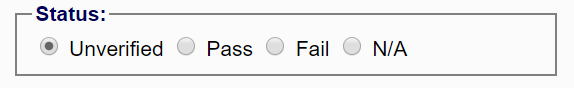
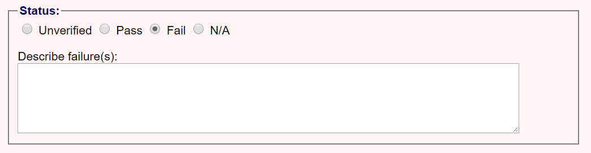
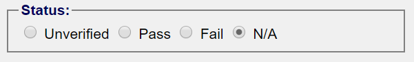
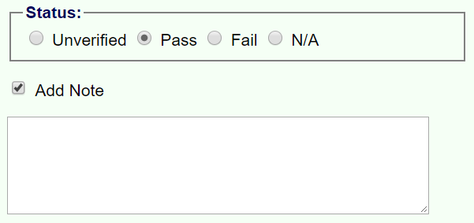

How to Use
Evaluating Publications
Evaluating publications requires editing software that allows you to review the resources of the publication, even if you are only reporting issues and not fixing them. The publication does not have to be zipped to carry out an evaluation, as zipping does not directly affect the accessibility.
There are two steps in the evaluation process:
- 1. Automated Verification
-
Automated verification is done using the DAISY Ace tool. This tool checks accessibility requirements that can be programmatically determined.
Instructions on how to install and run this tool are available at ???.
Explain how to load the final report.
- 2. Manual Verification
-
Although the automatic verification tool will alert you to some problems that require manual inspection, there are additional manual checks that need to be completed that a tool cannot verify (quality of descriptions, scripting and keyboard issues, etc.). These checks must be performed to ensure conformance with the EPUB Accessibility specification — a claim of conformance cannot be made only from automated testing.
The second step in evaluating conformance is therefore to manually check the publication against the manual requirements. The Conformance Verification tab provides a list of requirements that must be passed for each WCAG success criterion and each additional EPUB requirement.
This tab is configured by default to verify that the publication meets WCAG Level A requirements. To change to a higher conformance level, or to view additional higher-level success criteria, refer to the configuration section below.
Step through each success criterion and check that it is satisfied by the content. Each criterion includes a status section to simplify tracking the overall conformance, and to facilitate generating a report at the end of the evaluation.
The status section appears after the links to the supporting documentation and includes pass, fail and not applicable options. The following examples explain the available status options.
If the publication fails a success criterion, setting the status reveals a field to describe why it failed. Set the "N/A" (not applicable) status for any criteria that are not applicable to the publication. If you leave any status section set to unverified, you will receive an error at the report generation step. An optional note field is provided after the status section for recording any general notes you wish to provide. These notes are included in the generated report. 
Adding Discovery Metadata
Note: If the publication already includes discovery metadata, you can skip this step. If you intend to generate a report, however, it is recommended that you fill in the form to match the specified metadata to ensure discovery information is included in the output.
After completing the accessibility evaluation, the next step is to add the appropriate discovery metadata using the Discovery Metadata tab.
-090Each of the fields in this tab corresponds to a schema.org accessibility metadata property. For more information on how to complete these fields, refer to their schema.org definitions and to the descriptions in the EPUB Accessibility Techniques document.
After filling out all the relevant metadata, click the "Generate" button at the bottom of the tab to create metadata tags to paste into your publication's package document.
Note: Include discovery metadata even if the publication fails conformance testing. It is a required component of the EPUB Accessibility specification.
Adding Conformance Metadata
The last step is to report on conformance.
Do not skip this step just because a publication has failed its accessibility evaluation. Even if a publication fails, it is important to note who carried out the evaluation and, if possible, to provide a link to the detailed report explaining why.
Configuring Reports
There are a number of reporting options that can be controlled from the configuration dialog.
The first section identifies key metadata
The next section of the configuration dialog allows you to specify the level of WCAG conformance you are testing.
By default, reporting is set to the lowest WCAG level: Level A. By changing to AA, additional success criteria will automatically be added to the reporting field.
It is also possible to hide content-specific success criteria if you know that they do not apply to the publication (e.g., scripting requirements).
Generating Reports
After completing all of the evaluation steps, it is possible to generate a report based on your findings. This report can be included in the EPUB publication or hosted on the web and linked to from the publication.
To create the report, click on the "Generate" button at the top of the page.
If any errors are encountered while compiling the report, you will receive an alert and the errors will be listed in a message panel at the bottom of the page. Clicking on each message will take you to the location of the error or warning.
Managing Reports
There are going to be times when you are not able to complete an evaluation at the same time that you initiate it. At the same time, whenever you close down your browser, any unsaved information is lost. To avoid having to leave your computer running to work around this dilemma, the reporting tool provides two options to save and reload in-progress reports:
- Local storage in the browser
-
If your browser supports local storage, it is possible to save the report in the browser. Local storage is the easiest option, as all you have to do is click the Save/Load buttons, but it comes with one caveat: you need to be careful that data in local storage is not cleaned automatically. For example, if you are using a private browsing session (e.g., Chrome Incognito mode), any information you store is lost when you close the browser. Similarly, if you run a program to clean up computer space, the program might delete all information in local storage.
it is recommended to save a copy to file the first few times you use this option until you can be sure there is no risk of data loss.
- Saving to a file
-
Saving to file is the safest method for storing a report for later, but also requires more steps. When you select this option, a new window will open with the JSON-encoded report data. You can either save this entire page to disk or copy the JSON data from the text field and save it using a text editor. Do not use a word processor, like Microsoft Word, to save the data, as it may reformat the text and break the JSON encoding.
Caution: Do not bookmark the HTML page with the expectation that you can return to it later to retrieve your data. It is a temporary page. Your report data will no longer be available when you return.
When you reload the report, you will be prompted to paste the saved data. Only copy the JSON data. If you saved the generated HTML page that includes the JSON data, do not copy the HTML source or any of the surrounding text on the page.
Adapting to Workflows
You do not have to use all of the features of this tool in the evaluation of EPUB publications, and might not use any depending on your specific needs. It is designed as a reference implementation of what has to be done to properly evaluate and identify accessible publications, but can be adapted in many ways to meet the reality of your particular workflow.
Some of the ways your workflows might differ include:
- you might address accessibility requirements further upstream from the output, in which case some manual verification steps could be skipped by the evaluator (e.g., provision of alternative text and long descriptions for image assets);
- the storage and inclusion of metadata might not be a manual process, in which case those steps might be skipped or the necessary information might be included in the final product some other way;
- you might not provide reports for each publication you produce or you might have your own reporting template, in which case there is no need to fill out the manual conformance fields;
- your evaluators may already be sufficiently proficient with WCAG evaluations that they do not need to cross-check against the tool.